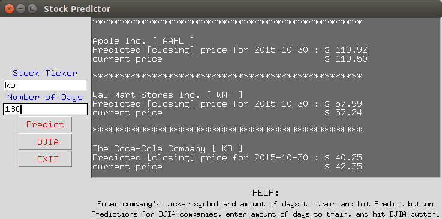

Undergraduate AI project · University of West Florida · 2015 → 2026
Predict the next close with a support vector machine
Pick a stock and a training window. A support vector regressor learns from daily prices and technical indicators (RSI, MACD, SMA, EMA), right in your browser. It then predicts the next trading day's close and shows how it would have done over the last 20 days.
Loading…
Price history and predictions
How did it do? Walk-forward backtest, last 20 trading days
Show day-by-day results
| Date | Prev close | Predicted | Actual | Error | Direction |
|---|
Technical indicators today
How it works
- 1
Collect
Daily open, high, low, close and volume for the last two years, from Yahoo Finance.
- 2
Engineer
Compute a 20-day SMA, a 12-day EMA, 14-day RSI and MACD (12/26) from the closing prices.
- 3
Scale
Min-max scale every feature to [−1, 1] using only the training window, as in the original
normalize.py. - 4
Train
Fit an ε-support vector regressor with an RBF kernel. Each day's features map to the next day's return.
- 5
Predict and check
Predict the next trading day, skipping weekends and NYSE holidays. Then replay the last 20 days, training only on what was known each morning.
About the project
Stock Predictor Using Machine Learning began in 2015 as an undergraduate research project by Prakash Dhimal and Kevin Sanford in the Department of Computer Science at the University of West Florida, with faculty advisor Dr. Eman El-Sheikh.
The original was a Python desktop app built on scikit-learn's SVR and a Tkinter GUI. Over the years it gained technical indicators, autocomplete and a trading-day calendar. This page is a faithful web port: the same features and the same kind of model, running entirely in JavaScript.
The 2015 poster concluded that the model predicted the right direction about 50% of the time, “the same as flipping a coin.” The backtest above lets you check that conclusion against today's data. It mostly still holds, which is the real lesson: past prices alone carry very little signal about tomorrow.
